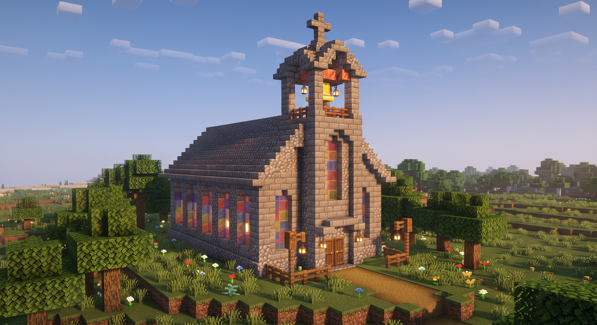

✝ Het Altaar & Koor
Het heilige middelpunt van de kerk voor gebed, dankzegging en de eucharistie. We maken het van gepolijst gesteente met een tabernakel en het kruisbeeld.
Welkom in de Minecraft-wereld van De Blockertjes! In deze virtuele wereld slaan we de handen in elkaar om vanuit onze christelijke gemeenschap een prachtige kerk en dorpsplein op te richten. Een plek waar geloof, creativiteit en vriendschap elkaar ontmoeten — steen voor steen, blokje voor blokje.
Onze server is vers opgestart en de wereld ligt nog helemaal ongerept en open op ons te wachten. Er is nog geen enkel blokje geplaatst. Dat betekent dat we samen vanaf nul beginnen: de grondstoffen moeten nog gedolven worden, de fundering moet nog gelegd worden en de muren moeten nog rijzen. Jij kan dus vanaf de allereerste steen meehelpen!

Dit is wat we samen willen bouwen: Een sfeervolle, robuuste dorpskerk van natuursteen en cobble, met een trotse klokkentoren, een luidklok, gebrandschilderde glasramen die het zonlicht vangen, en een warm houten portaal met lantaarns. Geïnspireerd op onze eigen Sint-Annakerk in Aalst!
✝ Gewijde Architectuur ✝
Een kerk is meer dan alleen een dak boven het hoofd. Elk onderdeel heeft een betekenis en brengt ons dichter bij God en elkaar.
Het heilige middelpunt van de kerk voor gebed, dankzegging en de eucharistie. We maken het van gepolijst gesteente met een tabernakel en het kruisbeeld.
Het hoogste punt met een luidklok (noteblocks of bellen) die tot ver in de Minecraft-vallei te horen is om de gemeenschap op te roepen voor de viering.
Rijke kleuren (lapis lazuli, rood en geel) in de hoge vensters, waardoor het zonlicht schitterende patronen werpt op de stenen vloer van het schip.
Een gezellig plein rondom de kerk met bloemenperken, zitbanken, lantaarns en bomen waar spelers na de bijeenkomst kunnen rondhangen en plannen smeden.
🤝 Geloof & Gemeenschap 🤝
Als catechisten bij Kerk in Aalst willen we tonen dat geloof levend en verbindend is, waar we ook zijn — in de kerkbanken én achter het toetsenbord.
Geen eenzame survival, maar een gemeenschappelijk doel. We overleggen, helpen elkaar met steigers en materialen, en vieren elke nieuwe toren of boog die klaar is.
Net zoals in de catechese en het echte leven staan vriendelijkheid, bemoediging en naastenliefde centraal. Iedereen kan op zijn eigen tempo meedoen.
Ontdek hoe symboliek, lichtinval en architectuur samenkomen. Van mozaïeken tot bijbelse verhalen in blokkenkunst: laat je creativiteit de vrije loop!
🔒 Toegangscontrole 🔒
Onze server is beveiligd met een whitelist zodat we weten wie er meebouwt en onze wereld gezellig en veilig blijft. Geef je Minecraft Java gebruikersnaam door en we voegen je zo snel mogelijk toe!
🎮 Handleiding 🎮
Verbinden is heel eenvoudig. Volg deze vier stappen in Minecraft en stap binnen op de bouwplaats van onze kerk!
Vul het formulier hierboven in zodat we je gebruikersnaam op de toegangslijst kunnen zetten.
Open de officiële Minecraft Launcher op je pc of laptop en start de nieuwste versie van Minecraft Java Edition op.
Klik op Meerspelerspel en daarna op Server Toevoegen. Vul bij Serveradres: minecraft.deblockertjes.be in.
Zodra je toegevoegd bent, selecteer je de server in je lijst en klik je op Deelnemen. Welkom op de bouwplaats!
✝ De Goede Bouwers Code ✝
"Heb je naaste lief als jezelf" — Om het voor iedereen fijn, veilig en opbouwend te houden, hanteren we deze gouden afspraken in onze wereld.
Breek nooit bouwwerken van anderen af en plaats geen TNT of lava. Wat iemand met zorg en toewijding gebouwd heeft, respecteren en bewonderen we.
We behandelen elkaar met respect en geduld. Geen scheldwoorden, pestgedrag of negativiteit. Onze chat is een plek van warmte en gezelligheid.
Neem geen spullen uit kisten van anderen zonder toestemming. We delen materialen met wie het nodig heeft om samen verder te bouwen.
Draag je steentje bij aan de centrale kerk, het plein of de omringende wegen. Vraag gerust aan medebouwers waar nog handen of grondstoffen nodig zijn!